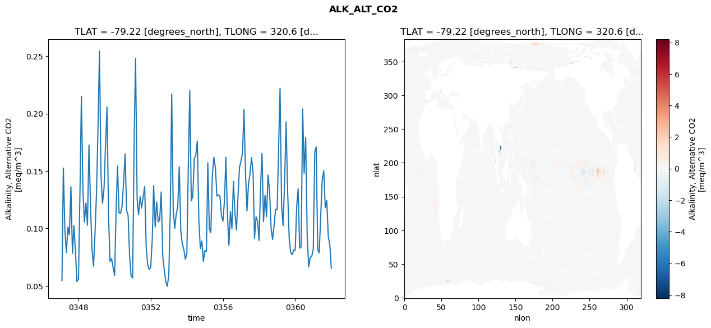
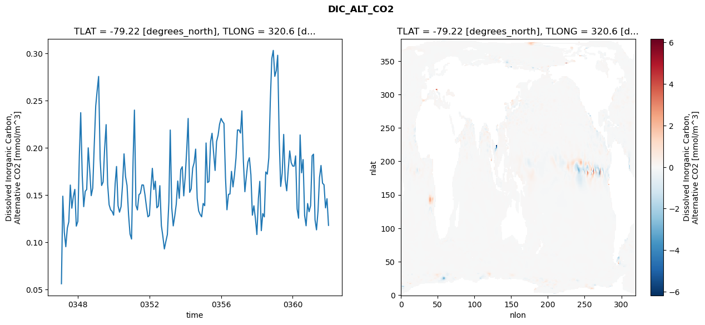
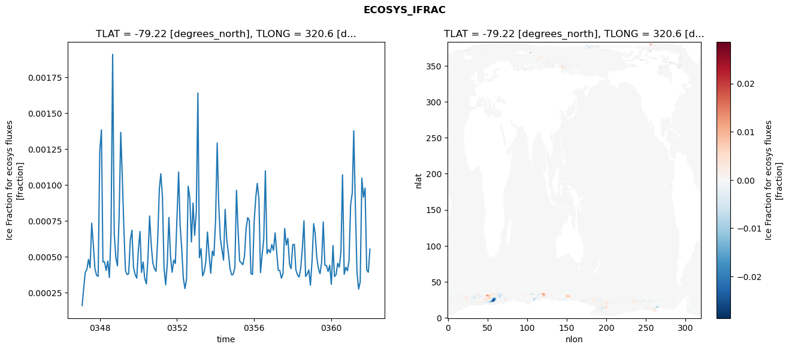
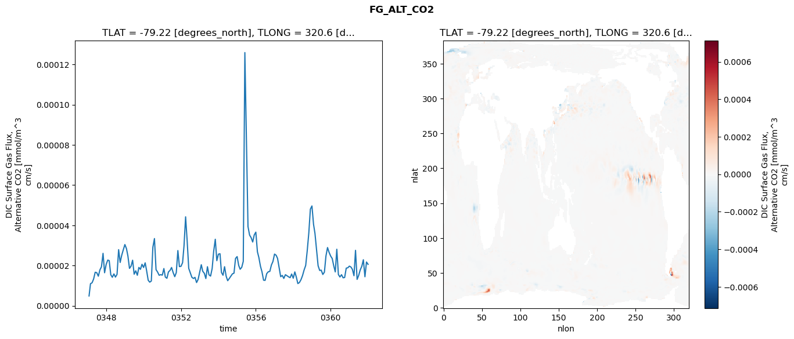

glb-dor_North_Atlantic_basin_019_1999-01-01_00076#
Simulation details#
Case: smyle.cdr-atlas-v0.glb-dor_North_Atlantic_basin_019_1999-01-01_00076.001
Basin: North_Atlantic_basin
Polygon: 19.0
Start date: 1999-01
Show code cell source Hide code cell source
import xarray as xr
import matplotlib.pyplot as plt
Show code cell source Hide code cell source
zarr_store = "/path/to/zarr/store"
# Parameters
zarr_store = "/global/cfs/projectdirs/m4746/Projects/Ocean-CDR-Atlas-v0/data/validation/smyle.cdr-atlas-v0.glb-dor_North_Atlantic_basin_019_1999-01-01_00076.001.validation.zarr"
Show code cell source Hide code cell source
%%time
ds_o = xr.open_zarr(zarr_store).compute()
ds_o
CPU times: user 698 ms, sys: 460 ms, total: 1.16 s
Wall time: 1.47 s
<xarray.Dataset> Size: 2MB
Dimensions: (nlat: 384, nlon: 320, time: 180)
Coordinates:
TLAT float64 8B -79.22
TLONG float64 8B 320.6
ULAT float64 8B -78.95
ULONG float64 8B 321.1
* time (time) object 1kB 0347-02-01 00:00:00 ... 0362-01-01 0...
z_t float32 4B 500.0
Dimensions without coordinates: nlat, nlon
Data variables:
ALK_ALT_CO2_diff (nlat, nlon) float32 492kB nan nan nan ... nan nan nan
ALK_ALT_CO2_rmse (time) float64 1kB 0.05467 0.1526 ... 0.08628 0.06536
DIC_ALT_CO2_diff (nlat, nlon) float32 492kB nan nan nan ... nan nan nan
DIC_ALT_CO2_rmse (time) float64 1kB 0.05631 0.149 0.1105 ... 0.1463 0.1181
ECOSYS_IFRAC_diff (nlat, nlon) float32 492kB nan nan nan ... nan nan nan
ECOSYS_IFRAC_rmse (time) float64 1kB 0.0001596 0.0002754 ... 0.0005535
FG_ALT_CO2_diff (nlat, nlon) float32 492kB nan nan nan ... nan nan nan
FG_ALT_CO2_rmse (time) float64 1kB 4.895e-06 1.098e-05 ... 2.063e-05xarray.Dataset
- nlat: 384
- nlon: 320
- time: 180
- TLAT()float64-79.22
- long_name :
- array of t-grid latitudes
- units :
- degrees_north
array(-79.22052261)
- TLONG()float64320.6
- long_name :
- array of t-grid longitudes
- units :
- degrees_east
array(320.56250892)
- ULAT()float64-78.95
- long_name :
- array of u-grid latitudes
- units :
- degrees_north
array(-78.95289509)
- ULONG()float64321.1
- long_name :
- array of u-grid longitudes
- units :
- degrees_east
array(321.12500894)
- time(time)object0347-02-01 00:00:00 ... 0362-01-...
- bounds :
- time_bound
- long_name :
- time
array([cftime.DatetimeNoLeap(347, 2, 1, 0, 0, 0, 0, has_year_zero=True), cftime.DatetimeNoLeap(347, 3, 1, 0, 0, 0, 0, has_year_zero=True), cftime.DatetimeNoLeap(347, 4, 1, 0, 0, 0, 0, has_year_zero=True), cftime.DatetimeNoLeap(347, 5, 1, 0, 0, 0, 0, has_year_zero=True), cftime.DatetimeNoLeap(347, 6, 1, 0, 0, 0, 0, has_year_zero=True), cftime.DatetimeNoLeap(347, 7, 1, 0, 0, 0, 0, has_year_zero=True), cftime.DatetimeNoLeap(347, 8, 1, 0, 0, 0, 0, has_year_zero=True), cftime.DatetimeNoLeap(347, 9, 1, 0, 0, 0, 0, has_year_zero=True), cftime.DatetimeNoLeap(347, 10, 1, 0, 0, 0, 0, has_year_zero=True), cftime.DatetimeNoLeap(347, 11, 1, 0, 0, 0, 0, has_year_zero=True), cftime.DatetimeNoLeap(347, 12, 1, 0, 0, 0, 0, has_year_zero=True), cftime.DatetimeNoLeap(348, 1, 1, 0, 0, 0, 0, has_year_zero=True), cftime.DatetimeNoLeap(348, 2, 1, 0, 0, 0, 0, has_year_zero=True), cftime.DatetimeNoLeap(348, 3, 1, 0, 0, 0, 0, has_year_zero=True), cftime.DatetimeNoLeap(348, 4, 1, 0, 0, 0, 0, has_year_zero=True), cftime.DatetimeNoLeap(348, 5, 1, 0, 0, 0, 0, has_year_zero=True), cftime.DatetimeNoLeap(348, 6, 1, 0, 0, 0, 0, has_year_zero=True), cftime.DatetimeNoLeap(348, 7, 1, 0, 0, 0, 0, has_year_zero=True), cftime.DatetimeNoLeap(348, 8, 1, 0, 0, 0, 0, has_year_zero=True), cftime.DatetimeNoLeap(348, 9, 1, 0, 0, 0, 0, has_year_zero=True), cftime.DatetimeNoLeap(348, 10, 1, 0, 0, 0, 0, has_year_zero=True), cftime.DatetimeNoLeap(348, 11, 1, 0, 0, 0, 0, has_year_zero=True), cftime.DatetimeNoLeap(348, 12, 1, 0, 0, 0, 0, has_year_zero=True), cftime.DatetimeNoLeap(349, 1, 1, 0, 0, 0, 0, has_year_zero=True), cftime.DatetimeNoLeap(349, 2, 1, 0, 0, 0, 0, has_year_zero=True), cftime.DatetimeNoLeap(349, 3, 1, 0, 0, 0, 0, has_year_zero=True), cftime.DatetimeNoLeap(349, 4, 1, 0, 0, 0, 0, has_year_zero=True), cftime.DatetimeNoLeap(349, 5, 1, 0, 0, 0, 0, has_year_zero=True), cftime.DatetimeNoLeap(349, 6, 1, 0, 0, 0, 0, has_year_zero=True), cftime.DatetimeNoLeap(349, 7, 1, 0, 0, 0, 0, has_year_zero=True), cftime.DatetimeNoLeap(349, 8, 1, 0, 0, 0, 0, has_year_zero=True), cftime.DatetimeNoLeap(349, 9, 1, 0, 0, 0, 0, has_year_zero=True), cftime.DatetimeNoLeap(349, 10, 1, 0, 0, 0, 0, has_year_zero=True), cftime.DatetimeNoLeap(349, 11, 1, 0, 0, 0, 0, has_year_zero=True), cftime.DatetimeNoLeap(349, 12, 1, 0, 0, 0, 0, has_year_zero=True), cftime.DatetimeNoLeap(350, 1, 1, 0, 0, 0, 0, has_year_zero=True), cftime.DatetimeNoLeap(350, 2, 1, 0, 0, 0, 0, has_year_zero=True), cftime.DatetimeNoLeap(350, 3, 1, 0, 0, 0, 0, has_year_zero=True), cftime.DatetimeNoLeap(350, 4, 1, 0, 0, 0, 0, has_year_zero=True), cftime.DatetimeNoLeap(350, 5, 1, 0, 0, 0, 0, has_year_zero=True), cftime.DatetimeNoLeap(350, 6, 1, 0, 0, 0, 0, has_year_zero=True), cftime.DatetimeNoLeap(350, 7, 1, 0, 0, 0, 0, has_year_zero=True), cftime.DatetimeNoLeap(350, 8, 1, 0, 0, 0, 0, has_year_zero=True), cftime.DatetimeNoLeap(350, 9, 1, 0, 0, 0, 0, has_year_zero=True), cftime.DatetimeNoLeap(350, 10, 1, 0, 0, 0, 0, has_year_zero=True), cftime.DatetimeNoLeap(350, 11, 1, 0, 0, 0, 0, has_year_zero=True), cftime.DatetimeNoLeap(350, 12, 1, 0, 0, 0, 0, has_year_zero=True), cftime.DatetimeNoLeap(351, 1, 1, 0, 0, 0, 0, has_year_zero=True), cftime.DatetimeNoLeap(351, 2, 1, 0, 0, 0, 0, has_year_zero=True), cftime.DatetimeNoLeap(351, 3, 1, 0, 0, 0, 0, has_year_zero=True), cftime.DatetimeNoLeap(351, 4, 1, 0, 0, 0, 0, has_year_zero=True), cftime.DatetimeNoLeap(351, 5, 1, 0, 0, 0, 0, has_year_zero=True), cftime.DatetimeNoLeap(351, 6, 1, 0, 0, 0, 0, has_year_zero=True), cftime.DatetimeNoLeap(351, 7, 1, 0, 0, 0, 0, has_year_zero=True), cftime.DatetimeNoLeap(351, 8, 1, 0, 0, 0, 0, has_year_zero=True), cftime.DatetimeNoLeap(351, 9, 1, 0, 0, 0, 0, has_year_zero=True), cftime.DatetimeNoLeap(351, 10, 1, 0, 0, 0, 0, has_year_zero=True), cftime.DatetimeNoLeap(351, 11, 1, 0, 0, 0, 0, has_year_zero=True), cftime.DatetimeNoLeap(351, 12, 1, 0, 0, 0, 0, has_year_zero=True), cftime.DatetimeNoLeap(352, 1, 1, 0, 0, 0, 0, has_year_zero=True), cftime.DatetimeNoLeap(352, 2, 1, 0, 0, 0, 0, has_year_zero=True), cftime.DatetimeNoLeap(352, 3, 1, 0, 0, 0, 0, has_year_zero=True), cftime.DatetimeNoLeap(352, 4, 1, 0, 0, 0, 0, has_year_zero=True), cftime.DatetimeNoLeap(352, 5, 1, 0, 0, 0, 0, has_year_zero=True), cftime.DatetimeNoLeap(352, 6, 1, 0, 0, 0, 0, has_year_zero=True), cftime.DatetimeNoLeap(352, 7, 1, 0, 0, 0, 0, has_year_zero=True), cftime.DatetimeNoLeap(352, 8, 1, 0, 0, 0, 0, has_year_zero=True), cftime.DatetimeNoLeap(352, 9, 1, 0, 0, 0, 0, has_year_zero=True), cftime.DatetimeNoLeap(352, 10, 1, 0, 0, 0, 0, has_year_zero=True), cftime.DatetimeNoLeap(352, 11, 1, 0, 0, 0, 0, has_year_zero=True), cftime.DatetimeNoLeap(352, 12, 1, 0, 0, 0, 0, has_year_zero=True), cftime.DatetimeNoLeap(353, 1, 1, 0, 0, 0, 0, has_year_zero=True), cftime.DatetimeNoLeap(353, 2, 1, 0, 0, 0, 0, has_year_zero=True), cftime.DatetimeNoLeap(353, 3, 1, 0, 0, 0, 0, has_year_zero=True), cftime.DatetimeNoLeap(353, 4, 1, 0, 0, 0, 0, has_year_zero=True), cftime.DatetimeNoLeap(353, 5, 1, 0, 0, 0, 0, has_year_zero=True), cftime.DatetimeNoLeap(353, 6, 1, 0, 0, 0, 0, has_year_zero=True), cftime.DatetimeNoLeap(353, 7, 1, 0, 0, 0, 0, has_year_zero=True), cftime.DatetimeNoLeap(353, 8, 1, 0, 0, 0, 0, has_year_zero=True), cftime.DatetimeNoLeap(353, 9, 1, 0, 0, 0, 0, has_year_zero=True), cftime.DatetimeNoLeap(353, 10, 1, 0, 0, 0, 0, has_year_zero=True), cftime.DatetimeNoLeap(353, 11, 1, 0, 0, 0, 0, has_year_zero=True), cftime.DatetimeNoLeap(353, 12, 1, 0, 0, 0, 0, has_year_zero=True), cftime.DatetimeNoLeap(354, 1, 1, 0, 0, 0, 0, has_year_zero=True), cftime.DatetimeNoLeap(354, 2, 1, 0, 0, 0, 0, has_year_zero=True), cftime.DatetimeNoLeap(354, 3, 1, 0, 0, 0, 0, has_year_zero=True), cftime.DatetimeNoLeap(354, 4, 1, 0, 0, 0, 0, has_year_zero=True), cftime.DatetimeNoLeap(354, 5, 1, 0, 0, 0, 0, has_year_zero=True), cftime.DatetimeNoLeap(354, 6, 1, 0, 0, 0, 0, has_year_zero=True), cftime.DatetimeNoLeap(354, 7, 1, 0, 0, 0, 0, has_year_zero=True), cftime.DatetimeNoLeap(354, 8, 1, 0, 0, 0, 0, has_year_zero=True), cftime.DatetimeNoLeap(354, 9, 1, 0, 0, 0, 0, has_year_zero=True), cftime.DatetimeNoLeap(354, 10, 1, 0, 0, 0, 0, has_year_zero=True), cftime.DatetimeNoLeap(354, 11, 1, 0, 0, 0, 0, has_year_zero=True), cftime.DatetimeNoLeap(354, 12, 1, 0, 0, 0, 0, has_year_zero=True), cftime.DatetimeNoLeap(355, 1, 1, 0, 0, 0, 0, has_year_zero=True), cftime.DatetimeNoLeap(355, 2, 1, 0, 0, 0, 0, has_year_zero=True), cftime.DatetimeNoLeap(355, 3, 1, 0, 0, 0, 0, has_year_zero=True), cftime.DatetimeNoLeap(355, 4, 1, 0, 0, 0, 0, has_year_zero=True), cftime.DatetimeNoLeap(355, 5, 1, 0, 0, 0, 0, has_year_zero=True), cftime.DatetimeNoLeap(355, 6, 1, 0, 0, 0, 0, has_year_zero=True), cftime.DatetimeNoLeap(355, 7, 1, 0, 0, 0, 0, has_year_zero=True), cftime.DatetimeNoLeap(355, 8, 1, 0, 0, 0, 0, has_year_zero=True), cftime.DatetimeNoLeap(355, 9, 1, 0, 0, 0, 0, has_year_zero=True), cftime.DatetimeNoLeap(355, 10, 1, 0, 0, 0, 0, has_year_zero=True), cftime.DatetimeNoLeap(355, 11, 1, 0, 0, 0, 0, has_year_zero=True), cftime.DatetimeNoLeap(355, 12, 1, 0, 0, 0, 0, has_year_zero=True), cftime.DatetimeNoLeap(356, 1, 1, 0, 0, 0, 0, has_year_zero=True), cftime.DatetimeNoLeap(356, 2, 1, 0, 0, 0, 0, has_year_zero=True), cftime.DatetimeNoLeap(356, 3, 1, 0, 0, 0, 0, has_year_zero=True), cftime.DatetimeNoLeap(356, 4, 1, 0, 0, 0, 0, has_year_zero=True), cftime.DatetimeNoLeap(356, 5, 1, 0, 0, 0, 0, has_year_zero=True), cftime.DatetimeNoLeap(356, 6, 1, 0, 0, 0, 0, has_year_zero=True), cftime.DatetimeNoLeap(356, 7, 1, 0, 0, 0, 0, has_year_zero=True), cftime.DatetimeNoLeap(356, 8, 1, 0, 0, 0, 0, has_year_zero=True), cftime.DatetimeNoLeap(356, 9, 1, 0, 0, 0, 0, has_year_zero=True), cftime.DatetimeNoLeap(356, 10, 1, 0, 0, 0, 0, has_year_zero=True), cftime.DatetimeNoLeap(356, 11, 1, 0, 0, 0, 0, has_year_zero=True), cftime.DatetimeNoLeap(356, 12, 1, 0, 0, 0, 0, has_year_zero=True), cftime.DatetimeNoLeap(357, 1, 1, 0, 0, 0, 0, has_year_zero=True), cftime.DatetimeNoLeap(357, 2, 1, 0, 0, 0, 0, has_year_zero=True), cftime.DatetimeNoLeap(357, 3, 1, 0, 0, 0, 0, has_year_zero=True), cftime.DatetimeNoLeap(357, 4, 1, 0, 0, 0, 0, has_year_zero=True), cftime.DatetimeNoLeap(357, 5, 1, 0, 0, 0, 0, has_year_zero=True), cftime.DatetimeNoLeap(357, 6, 1, 0, 0, 0, 0, has_year_zero=True), cftime.DatetimeNoLeap(357, 7, 1, 0, 0, 0, 0, has_year_zero=True), cftime.DatetimeNoLeap(357, 8, 1, 0, 0, 0, 0, has_year_zero=True), cftime.DatetimeNoLeap(357, 9, 1, 0, 0, 0, 0, has_year_zero=True), cftime.DatetimeNoLeap(357, 10, 1, 0, 0, 0, 0, has_year_zero=True), cftime.DatetimeNoLeap(357, 11, 1, 0, 0, 0, 0, has_year_zero=True), cftime.DatetimeNoLeap(357, 12, 1, 0, 0, 0, 0, has_year_zero=True), cftime.DatetimeNoLeap(358, 1, 1, 0, 0, 0, 0, has_year_zero=True), cftime.DatetimeNoLeap(358, 2, 1, 0, 0, 0, 0, has_year_zero=True), cftime.DatetimeNoLeap(358, 3, 1, 0, 0, 0, 0, has_year_zero=True), cftime.DatetimeNoLeap(358, 4, 1, 0, 0, 0, 0, has_year_zero=True), cftime.DatetimeNoLeap(358, 5, 1, 0, 0, 0, 0, has_year_zero=True), cftime.DatetimeNoLeap(358, 6, 1, 0, 0, 0, 0, has_year_zero=True), cftime.DatetimeNoLeap(358, 7, 1, 0, 0, 0, 0, has_year_zero=True), cftime.DatetimeNoLeap(358, 8, 1, 0, 0, 0, 0, has_year_zero=True), cftime.DatetimeNoLeap(358, 9, 1, 0, 0, 0, 0, has_year_zero=True), cftime.DatetimeNoLeap(358, 10, 1, 0, 0, 0, 0, has_year_zero=True), cftime.DatetimeNoLeap(358, 11, 1, 0, 0, 0, 0, has_year_zero=True), cftime.DatetimeNoLeap(358, 12, 1, 0, 0, 0, 0, has_year_zero=True), cftime.DatetimeNoLeap(359, 1, 1, 0, 0, 0, 0, has_year_zero=True), cftime.DatetimeNoLeap(359, 2, 1, 0, 0, 0, 0, has_year_zero=True), cftime.DatetimeNoLeap(359, 3, 1, 0, 0, 0, 0, has_year_zero=True), cftime.DatetimeNoLeap(359, 4, 1, 0, 0, 0, 0, has_year_zero=True), cftime.DatetimeNoLeap(359, 5, 1, 0, 0, 0, 0, has_year_zero=True), cftime.DatetimeNoLeap(359, 6, 1, 0, 0, 0, 0, has_year_zero=True), cftime.DatetimeNoLeap(359, 7, 1, 0, 0, 0, 0, has_year_zero=True), cftime.DatetimeNoLeap(359, 8, 1, 0, 0, 0, 0, has_year_zero=True), cftime.DatetimeNoLeap(359, 9, 1, 0, 0, 0, 0, has_year_zero=True), cftime.DatetimeNoLeap(359, 10, 1, 0, 0, 0, 0, has_year_zero=True), cftime.DatetimeNoLeap(359, 11, 1, 0, 0, 0, 0, has_year_zero=True), cftime.DatetimeNoLeap(359, 12, 1, 0, 0, 0, 0, has_year_zero=True), cftime.DatetimeNoLeap(360, 1, 1, 0, 0, 0, 0, has_year_zero=True), cftime.DatetimeNoLeap(360, 2, 1, 0, 0, 0, 0, has_year_zero=True), cftime.DatetimeNoLeap(360, 3, 1, 0, 0, 0, 0, has_year_zero=True), cftime.DatetimeNoLeap(360, 4, 1, 0, 0, 0, 0, has_year_zero=True), cftime.DatetimeNoLeap(360, 5, 1, 0, 0, 0, 0, has_year_zero=True), cftime.DatetimeNoLeap(360, 6, 1, 0, 0, 0, 0, has_year_zero=True), cftime.DatetimeNoLeap(360, 7, 1, 0, 0, 0, 0, has_year_zero=True), cftime.DatetimeNoLeap(360, 8, 1, 0, 0, 0, 0, has_year_zero=True), cftime.DatetimeNoLeap(360, 9, 1, 0, 0, 0, 0, has_year_zero=True), cftime.DatetimeNoLeap(360, 10, 1, 0, 0, 0, 0, has_year_zero=True), cftime.DatetimeNoLeap(360, 11, 1, 0, 0, 0, 0, has_year_zero=True), cftime.DatetimeNoLeap(360, 12, 1, 0, 0, 0, 0, has_year_zero=True), cftime.DatetimeNoLeap(361, 1, 1, 0, 0, 0, 0, has_year_zero=True), cftime.DatetimeNoLeap(361, 2, 1, 0, 0, 0, 0, has_year_zero=True), cftime.DatetimeNoLeap(361, 3, 1, 0, 0, 0, 0, has_year_zero=True), cftime.DatetimeNoLeap(361, 4, 1, 0, 0, 0, 0, has_year_zero=True), cftime.DatetimeNoLeap(361, 5, 1, 0, 0, 0, 0, has_year_zero=True), cftime.DatetimeNoLeap(361, 6, 1, 0, 0, 0, 0, has_year_zero=True), cftime.DatetimeNoLeap(361, 7, 1, 0, 0, 0, 0, has_year_zero=True), cftime.DatetimeNoLeap(361, 8, 1, 0, 0, 0, 0, has_year_zero=True), cftime.DatetimeNoLeap(361, 9, 1, 0, 0, 0, 0, has_year_zero=True), cftime.DatetimeNoLeap(361, 10, 1, 0, 0, 0, 0, has_year_zero=True), cftime.DatetimeNoLeap(361, 11, 1, 0, 0, 0, 0, has_year_zero=True), cftime.DatetimeNoLeap(361, 12, 1, 0, 0, 0, 0, has_year_zero=True), cftime.DatetimeNoLeap(362, 1, 1, 0, 0, 0, 0, has_year_zero=True)], dtype=object) - z_t()float32500.0
- long_name :
- depth from surface to midpoint of layer
- positive :
- down
- units :
- centimeters
- valid_max :
- 537500.0
- valid_min :
- 500.0
array(500., dtype=float32)
- ALK_ALT_CO2_diff(nlat, nlon)float32nan nan nan nan ... nan nan nan nan
- cell_methods :
- time: mean
- grid_loc :
- 3111
- long_name :
- Alkalinity, Alternative CO2
- units :
- meq/m^3
array([[ nan, nan, nan, ..., nan, nan, nan], [ nan, nan, nan, ..., nan, nan, nan], [0.1081543 , 0.0637207 , 0.04492188, ..., nan, nan, nan], ..., [ nan, nan, nan, ..., nan, nan, nan], [ nan, nan, nan, ..., nan, nan, nan], [ nan, nan, nan, ..., nan, nan, nan]], dtype=float32) - ALK_ALT_CO2_rmse(time)float640.05467 0.1526 ... 0.08628 0.06536
- cell_methods :
- time: mean
- grid_loc :
- 3111
- long_name :
- Alkalinity, Alternative CO2
- units :
- meq/m^3
array([0.05466736, 0.1526183 , 0.0989225 , 0.07892586, 0.10126201, 0.09456577, 0.13633217, 0.07834265, 0.10245418, 0.0794748 , 0.05375675, 0.05591169, 0.13445959, 0.2150338 , 0.13231119, 0.10556895, 0.12230279, 0.10278199, 0.17266411, 0.12057047, 0.08238022, 0.06710792, 0.09589518, 0.13205722, 0.19049336, 0.25461232, 0.14645319, 0.12175242, 0.13463882, 0.17228255, 0.20577937, 0.10970868, 0.07130122, 0.07367366, 0.06619572, 0.05923285, 0.11645198, 0.15432978, 0.1134557 , 0.11310706, 0.11945702, 0.13952887, 0.16495325, 0.11560302, 0.11131585, 0.07502577, 0.05838899, 0.05692088, 0.18134284, 0.24795433, 0.12581297, 0.11186279, 0.12765364, 0.11783334, 0.12743852, 0.13640729, 0.08403469, 0.06833388, 0.06427133, 0.06620729, 0.09058483, 0.13733713, 0.10124534, 0.12302855, 0.10566148, 0.10772557, 0.1318229 , 0.07579091, 0.06426872, 0.05356117, 0.04958267, 0.05877967, 0.11715461, 0.2171154 , 0.1158894 , 0.0999666 , 0.11267365, 0.11869953, 0.15377105, 0.09810667, 0.08648374, 0.08177406, 0.07331448, 0.07765902, 0.15780016, 0.22012583, 0.12401247, 0.12802824, 0.16093048, 0.16373874, 0.1760535 , 0.10667471, 0.08237416, 0.08895482, 0.07138548, 0.08079594, 0.07994687, 0.15719507, 0.09937754, 0.09638154, 0.14641727, 0.16190786, 0.15303376, 0.12817389, 0.12917292, 0.12794834, 0.11121237, 0.10631698, 0.12472654, 0.16197376, 0.11280132, 0.08516949, 0.11481956, 0.09975037, 0.14086158, 0.1132696 , 0.09868914, 0.12824502, 0.15302754, 0.1588685 , 0.16597522, 0.20344439, 0.14955049, 0.11521094, 0.13840369, 0.1473808 , 0.16170306, 0.14970302, 0.09131292, 0.11012553, 0.10646473, 0.08955025, 0.13767367, 0.16530435, 0.10599266, 0.12883886, 0.11020515, 0.14648629, 0.13269684, 0.09991044, 0.0904059 , 0.10285182, 0.11658564, 0.1162937 , 0.17107238, 0.2220692 , 0.12035157, 0.10240079, 0.14009967, 0.1928843 , 0.13292849, 0.09183989, 0.07925608, 0.07713737, 0.08103442, 0.08098077, 0.11957138, 0.13458039, 0.08286699, 0.08384613, 0.20401118, 0.14803014, 0.17931753, 0.09249206, 0.06658288, 0.07478904, 0.07562405, 0.08168819, 0.16662439, 0.17094616, 0.0817127 , 0.0786427 , 0.1112961 , 0.14213411, 0.1503316 , 0.11804415, 0.12424734, 0.09263378, 0.08627746, 0.06535967]) - DIC_ALT_CO2_diff(nlat, nlon)float32nan nan nan nan ... nan nan nan nan
- cell_methods :
- time: mean
- grid_loc :
- 3111
- long_name :
- Dissolved Inorganic Carbon, Alternative CO2
- units :
- mmol/m^3
array([[ nan, nan, nan, ..., nan, nan, nan], [ nan, nan, nan, ..., nan, nan, nan], [0.11865234, 0.07080078, 0.0546875 , ..., nan, nan, nan], ..., [ nan, nan, nan, ..., nan, nan, nan], [ nan, nan, nan, ..., nan, nan, nan], [ nan, nan, nan, ..., nan, nan, nan]], dtype=float32) - DIC_ALT_CO2_rmse(time)float640.05631 0.149 ... 0.1463 0.1181
- cell_methods :
- time: mean
- grid_loc :
- 3111
- long_name :
- Dissolved Inorganic Carbon, Alternative CO2
- units :
- mmol/m^3
array([0.05631066, 0.14899784, 0.11052472, 0.09550194, 0.11518034, 0.12179911, 0.1607692 , 0.13628423, 0.14855459, 0.15617758, 0.11728751, 0.12227602, 0.19148026, 0.23739212, 0.17074999, 0.13790964, 0.15420197, 0.15605475, 0.2001746 , 0.17646285, 0.14956301, 0.15755327, 0.20182582, 0.24446455, 0.26176004, 0.27572962, 0.18826483, 0.16030026, 0.16402772, 0.19884966, 0.22472164, 0.16153205, 0.13994289, 0.13457978, 0.13289042, 0.12889329, 0.16220979, 0.18042555, 0.13886423, 0.13205561, 0.1378804 , 0.16076826, 0.19379518, 0.16964613, 0.16027291, 0.12950835, 0.10895791, 0.10362279, 0.18608424, 0.24011203, 0.13933236, 0.13439726, 0.15054393, 0.15204528, 0.1609198 , 0.16074168, 0.15064143, 0.13779323, 0.12714391, 0.12864422, 0.15810474, 0.17846368, 0.15606336, 0.16487058, 0.13667956, 0.13846015, 0.16011525, 0.11782177, 0.10665401, 0.09314776, 0.10097652, 0.10836015, 0.14302286, 0.2190055 , 0.13660698, 0.11754833, 0.12802583, 0.14034023, 0.16507529, 0.14672564, 0.17703452, 0.1801744 , 0.1493067 , 0.17027019, 0.19928161, 0.2312482 , 0.15301473, 0.1566381 , 0.17862457, 0.18455007, 0.19880905, 0.14662339, 0.1333966 , 0.12960106, 0.12714622, 0.14127435, 0.13892776, 0.20529942, 0.16341654, 0.1645871 , 0.20681819, 0.21557713, 0.19522706, 0.17622046, 0.2068494 , 0.21341561, 0.22509356, 0.23129263, 0.22795235, 0.2259532 , 0.16867002, 0.1346022 , 0.15092656, 0.15129894, 0.17525817, 0.15880789, 0.17156116, 0.18938266, 0.21905984, 0.21912186, 0.21576575, 0.23931407, 0.1856992 , 0.15372624, 0.17023859, 0.18500073, 0.18967866, 0.1715535 , 0.12888616, 0.13881041, 0.12560873, 0.10839538, 0.14672527, 0.16470807, 0.11250529, 0.13056455, 0.12705713, 0.17462832, 0.17229451, 0.18969791, 0.24887445, 0.29473716, 0.30329943, 0.27582675, 0.28200579, 0.29815515, 0.20915686, 0.15932846, 0.17341536, 0.21436341, 0.16645046, 0.15469596, 0.17626926, 0.1969378 , 0.18456569, 0.18088332, 0.18083692, 0.19162464, 0.1354172 , 0.12567518, 0.21381259, 0.17373088, 0.18774258, 0.12845468, 0.11767062, 0.14120043, 0.13254355, 0.13897407, 0.19174628, 0.19346007, 0.12396732, 0.11335173, 0.13336284, 0.16856355, 0.18149202, 0.1627525 , 0.16109039, 0.13661149, 0.14630955, 0.118086 ]) - ECOSYS_IFRAC_diff(nlat, nlon)float32nan nan nan nan ... nan nan nan nan
- cell_methods :
- time: mean
- grid_loc :
- 2110
- long_name :
- Ice Fraction for ecosys fluxes
- units :
- fraction
array([[ nan, nan, nan, ..., nan, nan, nan], [ nan, nan, nan, ..., nan, nan, nan], [2.8926134e-04, 2.1386147e-04, 8.8572502e-05, ..., nan, nan, nan], ..., [ nan, nan, nan, ..., nan, nan, nan], [ nan, nan, nan, ..., nan, nan, nan], [ nan, nan, nan, ..., nan, nan, nan]], dtype=float32) - ECOSYS_IFRAC_rmse(time)float640.0001596 0.0002754 ... 0.0005535
- cell_methods :
- time: mean
- grid_loc :
- 2110
- long_name :
- Ice Fraction for ecosys fluxes
- units :
- fraction
array([0.00015959, 0.00027544, 0.00039128, 0.00041044, 0.00048104, 0.00042318, 0.00073377, 0.00057979, 0.00041593, 0.00036997, 0.00036355, 0.0012385 , 0.00138326, 0.00046313, 0.00046464, 0.00040393, 0.00046963, 0.00035528, 0.00066059, 0.00190997, 0.00065901, 0.0004914 , 0.00043585, 0.00077219, 0.00136674, 0.00107382, 0.00069987, 0.00040387, 0.0003754 , 0.00038094, 0.00061678, 0.00068421, 0.00042501, 0.00037429, 0.00035064, 0.00055029, 0.00067553, 0.00039066, 0.00046254, 0.00034756, 0.00031122, 0.00049269, 0.00078357, 0.00058153, 0.00045666, 0.00041527, 0.00039847, 0.00061948, 0.00096838, 0.00107763, 0.00091745, 0.00042385, 0.00030398, 0.00045005, 0.0007733 , 0.00050029, 0.00039143, 0.00047661, 0.00045276, 0.00077401, 0.00108954, 0.00072382, 0.00055353, 0.00034939, 0.00027802, 0.0003434 , 0.0009908 , 0.00090735, 0.00060209, 0.00087367, 0.00064864, 0.00081229, 0.00164073, 0.00049276, 0.00055615, 0.00036627, 0.00039432, 0.0004674 , 0.0006716 , 0.00050914, 0.00038481, 0.000539 , 0.00050697, 0.00075187, 0.00129166, 0.00086656, 0.00062991, 0.00055051, 0.00047634, 0.00082927, 0.00061739, 0.00052313, 0.00041774, 0.00037296, 0.00037739, 0.00042472, 0.00096279, 0.00069496, 0.00047011, 0.00045784, 0.00044415, 0.0005014 , 0.00069361, 0.00077206, 0.00075461, 0.000383 , 0.00037651, 0.00074639, 0.00091442, 0.00101079, 0.00090085, 0.00038911, 0.00051496, 0.00061955, 0.00109747, 0.00052103, 0.00055042, 0.00052803, 0.00058505, 0.00054385, 0.00066584, 0.00054476, 0.00040628, 0.00040378, 0.00035007, 0.00038313, 0.00069627, 0.00058152, 0.00062735, 0.00044681, 0.00041634, 0.00058384, 0.00058582, 0.00040862, 0.00037255, 0.00035827, 0.0004207 , 0.0005534 , 0.00075024, 0.00036236, 0.00037817, 0.00040748, 0.00030053, 0.0004705 , 0.00073015, 0.00066091, 0.00049318, 0.0004189 , 0.00038133, 0.00045891, 0.00074185, 0.00044016, 0.0004379 , 0.00039687, 0.00044019, 0.00030758, 0.0005778 , 0.00036165, 0.00037566, 0.00045423, 0.00042706, 0.0005308 , 0.00107064, 0.00037734, 0.00042673, 0.0004017 , 0.0004694 , 0.00086099, 0.00094495, 0.00137761, 0.00084197, 0.00039305, 0.00027459, 0.00032397, 0.00104722, 0.0009144 , 0.00097764, 0.00040864, 0.00039183, 0.00055349]) - FG_ALT_CO2_diff(nlat, nlon)float32nan nan nan nan ... nan nan nan nan
- cell_methods :
- time: mean
- grid_loc :
- 2110
- long_name :
- DIC Surface Gas Flux, Alternative CO2
- units :
- mmol/m^3 cm/s
array([[ nan, nan, nan, ..., nan, nan, nan], [ nan, nan, nan, ..., nan, nan, nan], [-1.13872375e-07, -1.04119636e-07, -1.72435648e-08, ..., nan, nan, nan], ..., [ nan, nan, nan, ..., nan, nan, nan], [ nan, nan, nan, ..., nan, nan, nan], [ nan, nan, nan, ..., nan, nan, nan]], dtype=float32) - FG_ALT_CO2_rmse(time)float644.895e-06 1.098e-05 ... 2.063e-05
- cell_methods :
- time: mean
- grid_loc :
- 2110
- long_name :
- DIC Surface Gas Flux, Alternative CO2
- units :
- mmol/m^3 cm/s
array([4.89452167e-06, 1.09790016e-05, 1.14519815e-05, 1.33287583e-05, 1.66907950e-05, 1.64744544e-05, 1.47133197e-05, 1.78591160e-05, 1.93799186e-05, 2.60832258e-05, 1.64451920e-05, 2.06101648e-05, 2.27431279e-05, 2.24596194e-05, 1.54428694e-05, 1.41767022e-05, 1.58470277e-05, 1.42852715e-05, 1.56224375e-05, 2.79165124e-05, 2.15651062e-05, 2.51932796e-05, 2.78449546e-05, 3.04616716e-05, 2.84286245e-05, 2.47848453e-05, 1.86108952e-05, 1.96922523e-05, 2.26750944e-05, 1.57142149e-05, 1.74079124e-05, 1.51862678e-05, 1.90789965e-05, 1.81380326e-05, 2.06442418e-05, 1.90434085e-05, 2.13686543e-05, 1.74853410e-05, 1.27082063e-05, 1.17604234e-05, 1.23244616e-05, 2.91372648e-05, 3.34348774e-05, 1.79768665e-05, 1.67910994e-05, 1.51735549e-05, 1.54943061e-05, 1.52352522e-05, 1.85249232e-05, 1.42985248e-05, 1.36856922e-05, 1.68432680e-05, 1.75969422e-05, 1.90636410e-05, 1.65250674e-05, 1.44805030e-05, 1.65311409e-05, 2.74668344e-05, 1.94878848e-05, 1.96384224e-05, 2.14725770e-05, 2.98756096e-05, 4.42453956e-05, 3.23295717e-05, 1.85955224e-05, 1.64448118e-05, 1.41864313e-05, 1.35869955e-05, 1.41317207e-05, 1.15608267e-05, 1.31258830e-05, 1.67049780e-05, 2.04256612e-05, 1.71810382e-05, 1.61614126e-05, 1.35537321e-05, 1.94298865e-05, 1.53920809e-05, 1.47802108e-05, 1.85570129e-05, ... 1.25917953e-04, 8.33843291e-05, 3.94388455e-05, 3.51642927e-05, 3.39071782e-05, 3.17228146e-05, 3.52380561e-05, 3.66284119e-05, 2.68610970e-05, 2.40426314e-05, 1.97085623e-05, 1.69080756e-05, 1.27378545e-05, 1.26487280e-05, 1.59699058e-05, 1.69327601e-05, 1.71128770e-05, 2.02845094e-05, 2.20407188e-05, 2.57143308e-05, 2.51395793e-05, 2.35632545e-05, 1.88583919e-05, 1.44733594e-05, 1.51063032e-05, 1.36087031e-05, 1.54652366e-05, 1.49558488e-05, 1.44246573e-05, 1.39783395e-05, 1.57885394e-05, 1.37231665e-05, 1.68583115e-05, 1.43935890e-05, 1.10562445e-05, 1.15624014e-05, 1.29815509e-05, 1.50000104e-05, 1.78183050e-05, 2.00794110e-05, 2.74008344e-05, 3.63051293e-05, 4.80418035e-05, 4.96596093e-05, 4.05076604e-05, 3.59729015e-05, 2.76997271e-05, 1.99341570e-05, 1.75722956e-05, 1.77259089e-05, 1.55780851e-05, 1.67286358e-05, 2.47332248e-05, 2.89687334e-05, 2.65964893e-05, 2.47506602e-05, 2.34740180e-05, 2.00104757e-05, 1.68624249e-05, 2.81218974e-05, 1.55348896e-05, 1.43355047e-05, 1.54669923e-05, 1.39205826e-05, 1.40804462e-05, 1.87252458e-05, 1.88922756e-05, 1.97221321e-05, 1.92749893e-05, 1.81352736e-05, 1.49605318e-05, 2.75751659e-05, 1.31266310e-05, 1.50386037e-05, 1.78320567e-05, 1.96669894e-05, 2.28967931e-05, 1.44485795e-05, 2.17641083e-05, 2.06317237e-05])
- timePandasIndex
PandasIndex(CFTimeIndex([0347-02-01 00:00:00, 0347-03-01 00:00:00, 0347-04-01 00:00:00, 0347-05-01 00:00:00, 0347-06-01 00:00:00, 0347-07-01 00:00:00, 0347-08-01 00:00:00, 0347-09-01 00:00:00, 0347-10-01 00:00:00, 0347-11-01 00:00:00, ... 0361-04-01 00:00:00, 0361-05-01 00:00:00, 0361-06-01 00:00:00, 0361-07-01 00:00:00, 0361-08-01 00:00:00, 0361-09-01 00:00:00, 0361-10-01 00:00:00, 0361-11-01 00:00:00, 0361-12-01 00:00:00, 0362-01-01 00:00:00], dtype='object', length=180, calendar='noleap', freq='MS'))
Show code cell source Hide code cell source
variables = [v[:-5] for v in ds_o.variables if "_rmse" in v]
Show code cell source Hide code cell source
plt.rcParams.update({'figure.max_open_warning': 0})
for v in variables:
fig, axs = plt.subplots(1, 2, figsize=(15, 6))
ds_o[f"{v}_rmse"].plot(ax=axs[0])
ds_o[f"{v}_diff"].plot(ax=axs[1])
plt.suptitle(v, fontweight="bold")



